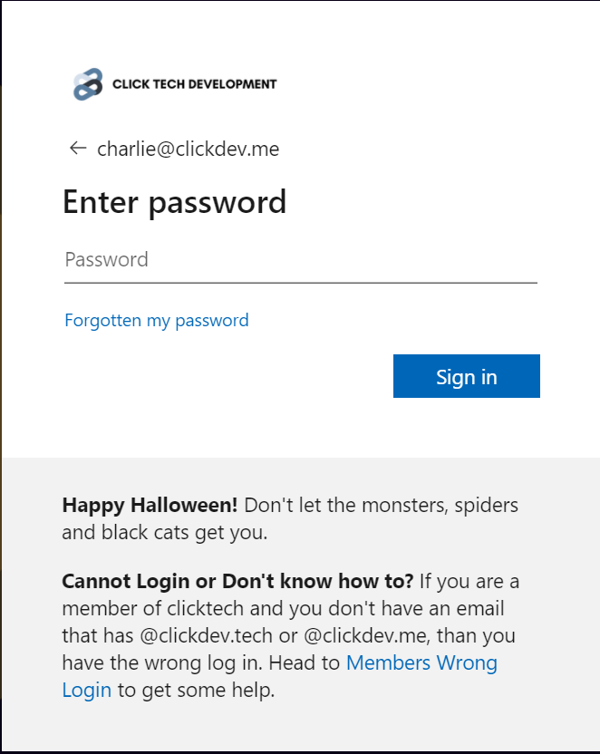
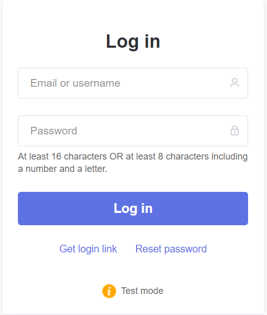
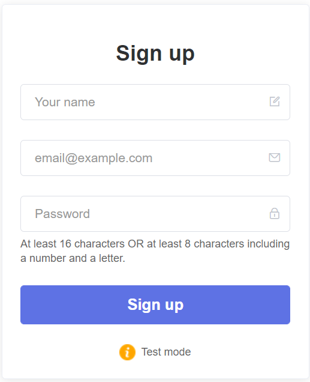
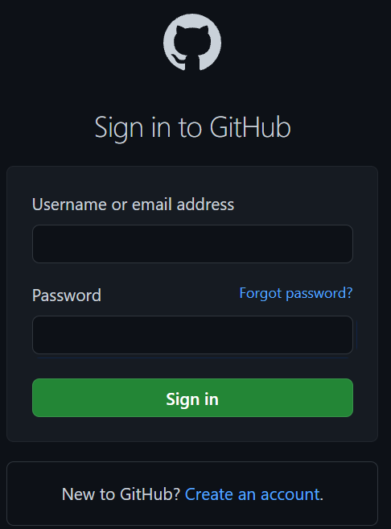
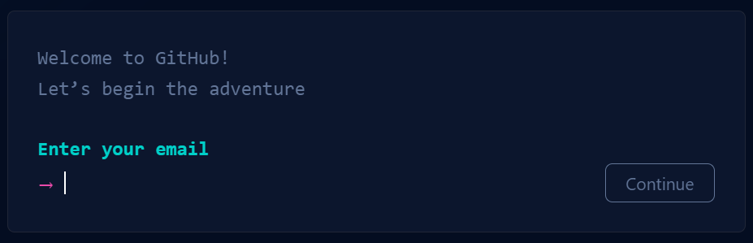

It seems that you must of visitd the wrong members page.
Let's help you find out what members page you were on and witch one you need to go to!
Let's find out what screen you are on and what you NEED to be at.
If your screen looks like the same one that is listed. Click on that same image.
     If your SSO screen does NOT look like any of the above, click here.